Wine in France
This stroy map is a brief introduction to major wine production regions and their representative grape/wine in France (Appellation d'Origine Contrôlée)
↓ to explore the vineyards
This stroy map is a brief introduction to major wine production regions and their representative grape/wine in France (Appellation d'Origine Contrôlée)
Appellation d'Origine Contrôlée (AOC) is is the official French certification system that protects regional agricultural products.
In the world of wine, AOC is the top tier of the French wine classification system that guarantees a wine's geographic origin, grape varieties, and traditional production methods.
This storymap will introduce some of the most famous AOCs, along with their grape varieties and representative wine.
Burgundy, in east-central France, produces some of the most famous, expensive and high-quality wine in the world.
The climate of Burgundy ranges from cool in the north to moderate further in the South. Dominated by two primary grape varieties, Pinot Noir and Chardonnay, the area is famous for elevating the concept of terroir, where microclimates and specific soil compositions dictate distinct wine profiles across meticulously classified vineyard plots known as climats.
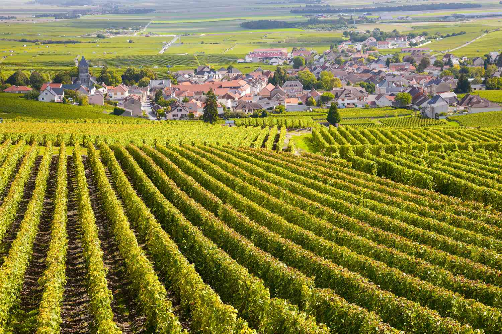
Pinot Noir is a black grape variety with thin a skin. It requires a cool to moderate climate in order to produce good-quality grapes.
Burgundy is the home of Pinot Noir. Tiny changes in the vineyard environment influence the quality of wines. The best sites locate on the south and south-east-facing slopes that benefit from extra sunlight and are capable of producing concentrated and complex wines suitable for bottle aging.
As wine, Pinot Noir in Burgundy is typically light-medium bodied wine with low tannins, high acidity, and red-fruit flavors (such as cherry and rasberry). Higher quality wine usually offers more complex flavor such as smoke, cloves, and even mushroom.

Chardonnay is a white grape variety. It can be grown in all kinds of climates and regions, and its flavor is highly influenced by such cliamtes and regions.
Also originated in Burgundy, Chardonnay grows widely from the far north to the south. In north Burdundy, the wine is usually dry with light to medium bodies and high acidity. It contains the flavor of green apple, lemon and wet stones, and meant to be refreshed. Further south, the wine has more bodies and ripper fruit flavors (peach, melon), with more complex flavors such as butter, cookie or mushroom.
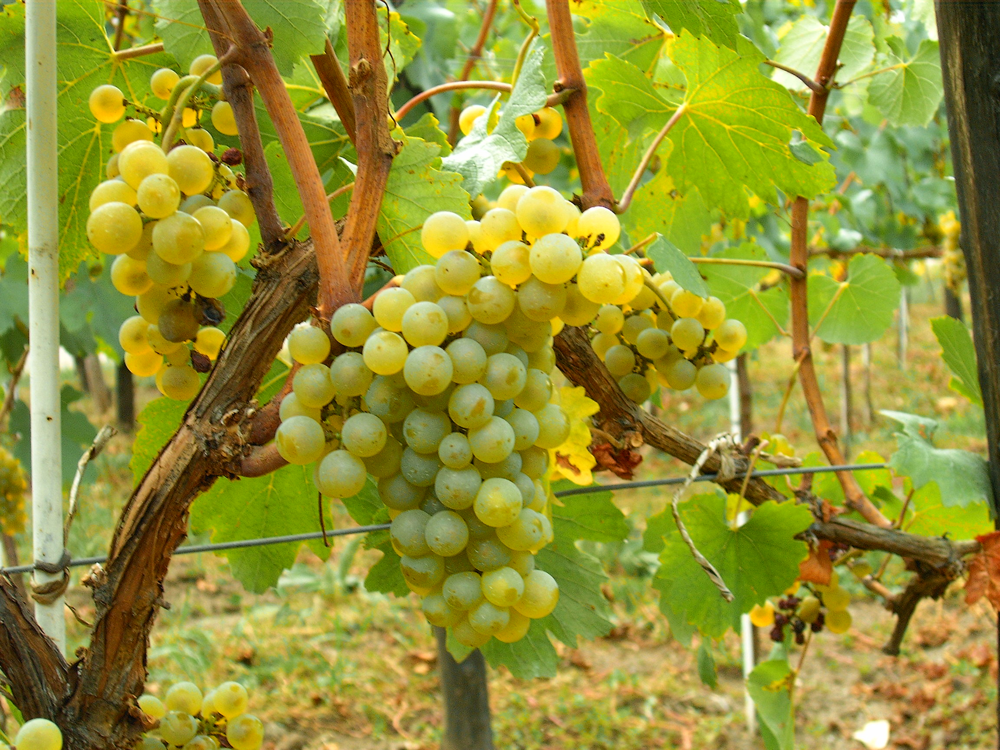
Romanée-Conti locates in the Côte de Nuits subregion of Burgundy. Romanée-Conti has been called "one of the greatest wines of the world and the most perfect of Burgundy ... with a forceful bouquet of violet mixed with a scent of cherry, a lively and profound ruby robe, a suaveness of exceptional finesse."
With about 4.5 acres, the vineyard only produces about 5,000 to 6,000 bottles per year, making it as one of the most expensive wine in the world, ranging from $21,000 – $35,000 per bottle.
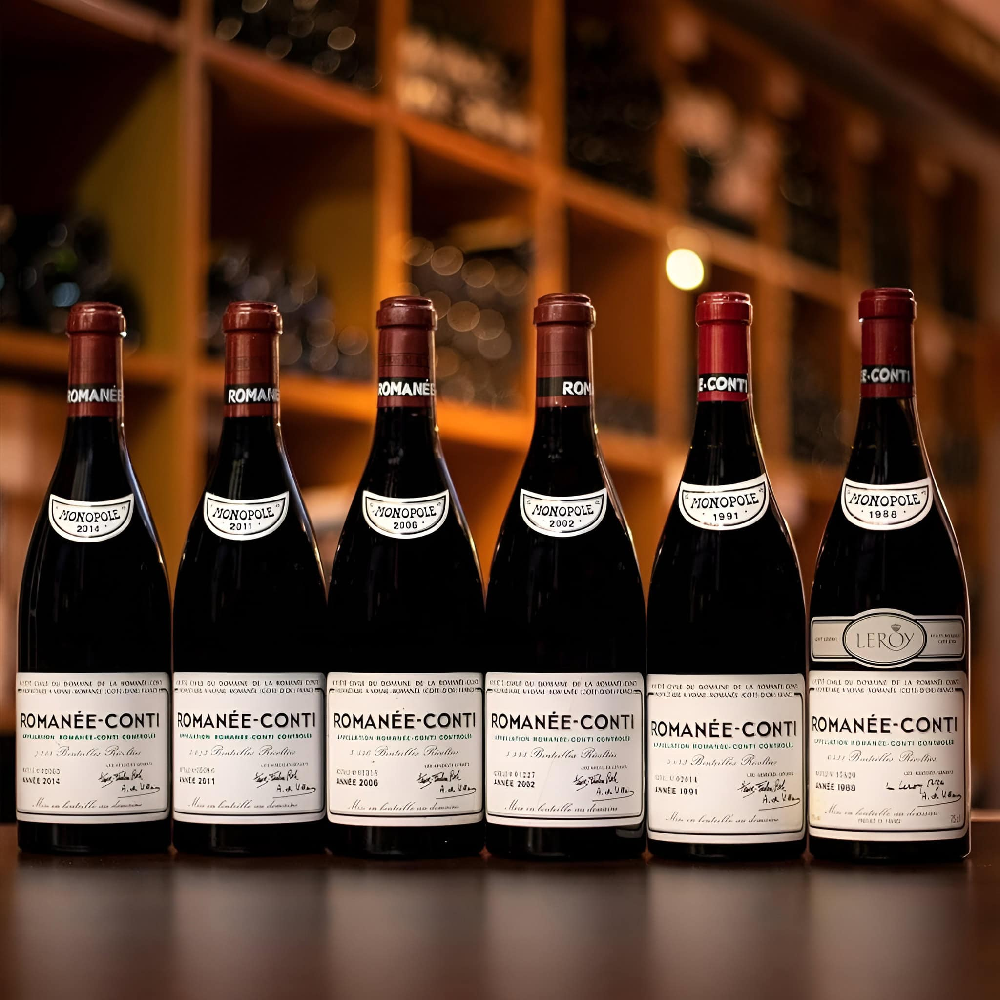
Bordeaux is another world-class wine production region, locates in southwestern France. It is famous for blend wine (combining two or more different grape varieties, vineyards, or vintages to create a more balanced, complex, and harmonious final product).
The climate at Bordeaux is heavily influenced by its proximity to the Atlantic Ocean and the Gironde estuary, offering warm summers and mild winters with well-distributed rainfall throughout the year.
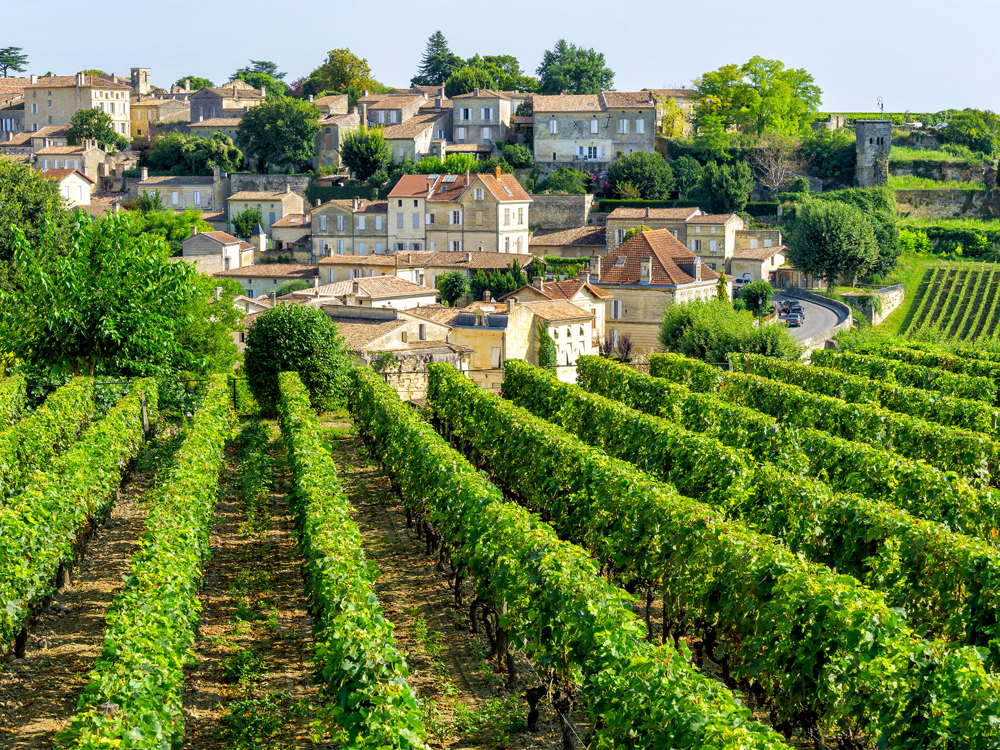
Cabernet Sauvigon is a black grape variety with thick skin and deep color from Bordeaux. It tends to grow in warm climates
In Bordeaux, Cabernet Sauvignon can fail to ripen in some cool sites. However, in some places, there are soils that cotain a lot of stones, making it possible to absorb heat during the day and maintain warmth in the vineyard late in the evening.
As wine, Cabernet Sauvignon has flavours of black fruit (black currant, black cherry) and herbaceous notes. Some high quality ones have smoke, vanilla or even earth.
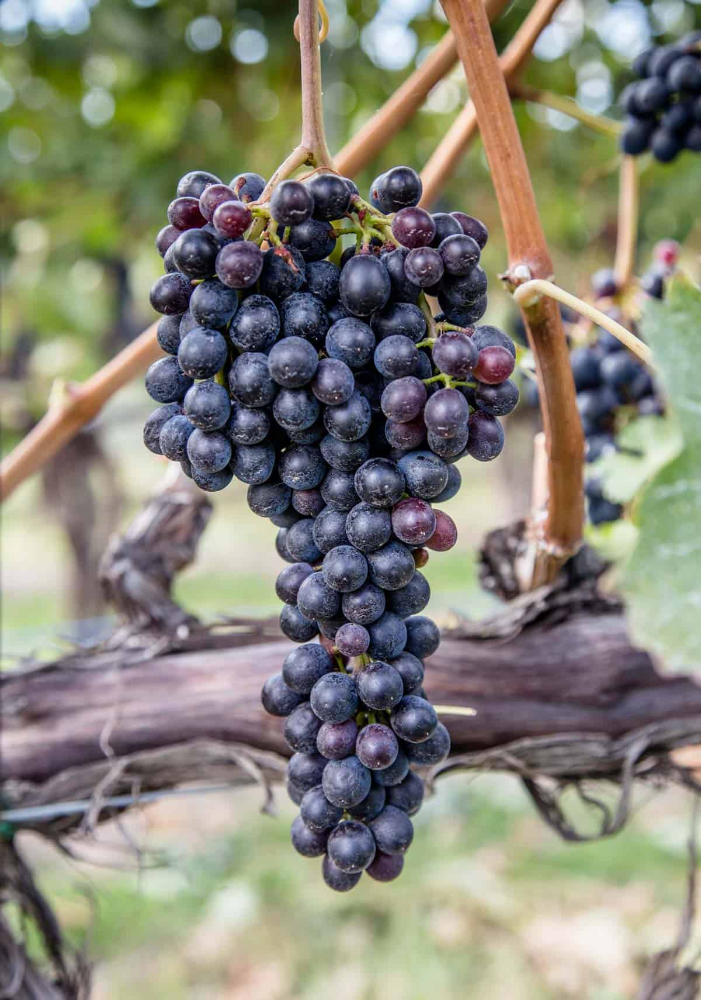
As a village in Bordeaux, Pauillac produces some of the best Bordeaux blend in the world. It covers nearly 1220 hectares of vines and produces 64,500 hectoliters of red wine.
Pauillac includes illustrious Domaines that give birth to great wines, including Château Lafite-Rothschild, Château Latour, and Château Mouton-Rothschild.
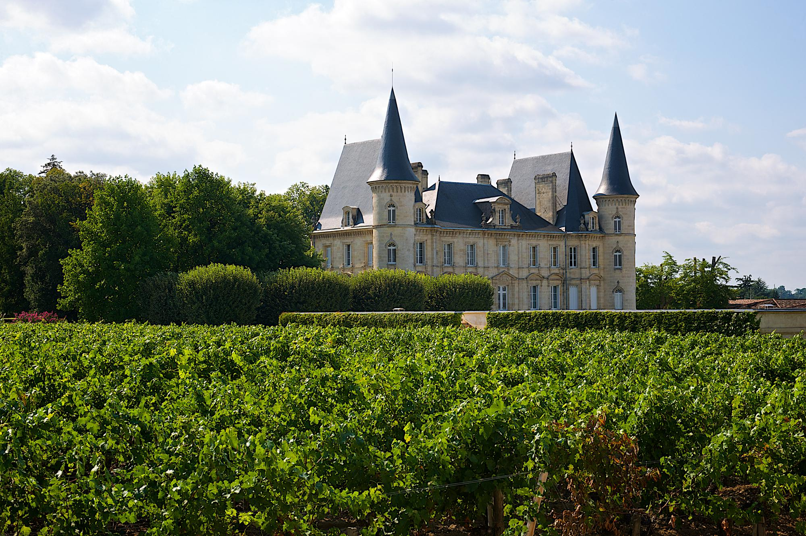
Located in the northeast of France, Champagne is known for its sparkling wine, named using region's name, Champagne.
Champagne is mainly made from Chardonnay and Pinot Noir. However, the color is mainly white with some exceptions to be pink. The taste tends to be crisp, with fine bubble and hint of critus and cookie.
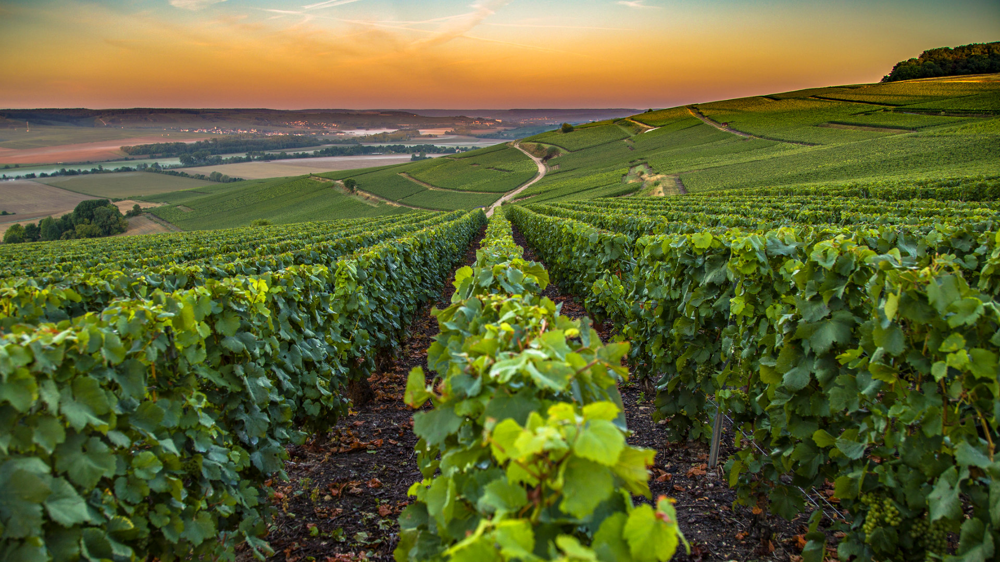
To produce wine, yeast is required for the fermentation process. Dead yeast is remained in the bottle and make contact with wine, producing the flavor of bread.
Riddling is the traditional champagne-making process to remove the dead yeast, the bottles are rotated and gradually tilted upside down so that the yeast sediment collects in the neck.
Not all the sparkling wine remains the dead yeast within the bottle, and this makes champagne as one of the unique sparkling wine in the world.
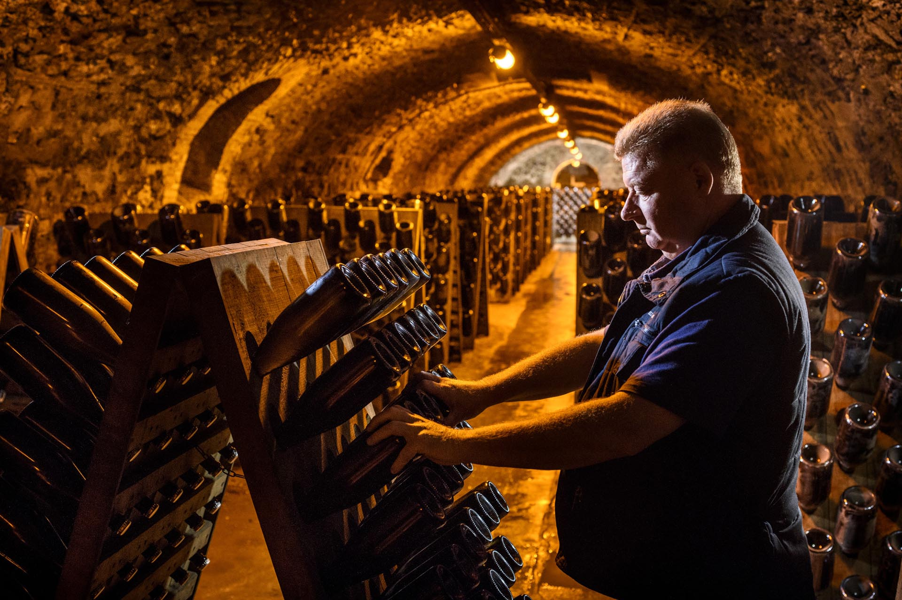
Alsace locates northeastern France, bordering Germany and Switzerland. It has alternated between German and French control over the centuries and reflects a mix of those cultures, including wine. It grows many grape varieties originated from Germany while having a strong delicate and elegant French characteristic.
The price of wine in Alsace is significantly lower other regions introduced in this storymap, but still maintaining a high quality.
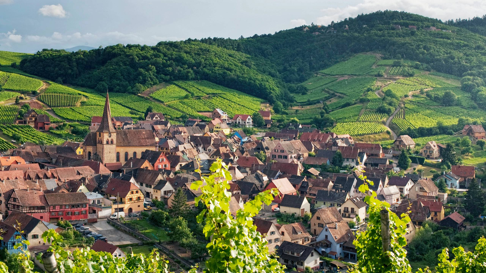
Schlossberg is a noble grand cru in Alsace. It locates on steep, south-facing slopes overlooking the town of Kaysersberg.
The slopes here rise steeply from 245 to 425 meters (800 to 1400ft), making them some of the steepest and highest in the region, the vines are exposed to the ripening rays of the sun throughout the morning and into the afternoon, producing some of the best Riesling in the World.
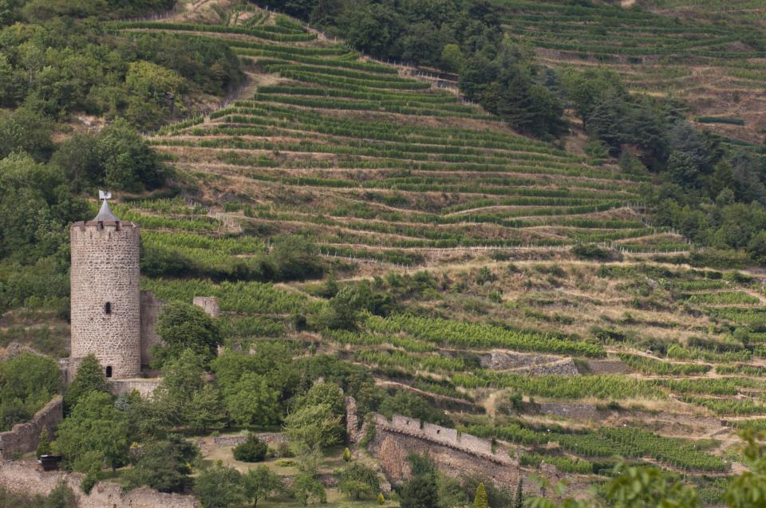
Riesling is a white grape variety that prefers cool to moderate climates to grow. It can produce wine with all kinds of sweetness.
In Alsace, most Riesling is dry (not sweet). Based on the level of ripeness, the flavor ranges from citurs and green fruit (lemon, apple, etc.) to stone fruit (peach) with a hint of mineral.
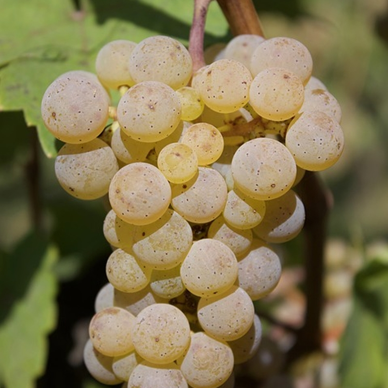